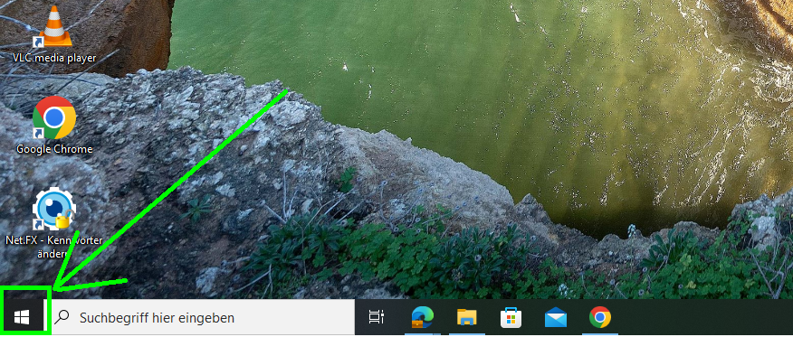

1A · Windows 10 und Windows 11
4. Fenster-Verwaltung, Screenshots, etc.
Zwei Fenster nutzen. Screenshots machen, speichern und bearbeiten.
Zuerst prüfen: Windows 10 oder Windows 11?
Schau ganz unten auf deinen Bildschirm. Suche das Windows-Zeichen: den Start-Knopf.
Windows 10
Das Windows-Zeichen ist meist weiß und unten links.

Windows 11
Das Windows-Zeichen ist meist blau und unten in der Mitte.
Unsicher? So prüfst du es genau
- Drücke Windows + R.
- Tippe winver. Drücke Enter (⮐).
- Lies im neuen Fenster: Steht dort Windows 10 oder Windows 11?
- Schließe das kleine Fenster. Wähle die passende Anleitung.
Die Farbe und der Platz des Start-Zeichens können anders eingestellt sein. Der Name in diesem Fenster ist eindeutig.
Nutze die Anleitung für dein Windows. Manche Schritte sind verschieden.
So arbeitest du heute
Öffne in Teams → Aufgaben die passende Aufgabe. Öffne dann die OneNote-Seite mit … → Öffnen in… → OneNote für das Web. Unten siehst du die Schritte.
- Beginne mit Aufgabe 1.
- Füge deine Bilder und Antworten in OneNote ein.
- Klicke oben in Edge auf den Teams-Tab. Klicke in der Aufgabe oben rechts auf Abgeben.
- Mache dann die nächste Aufgabe.
Die OneNote-Seite öffnen
- Öffne die passende Aufgabe in Teams.
- Suche unter Meine Arbeit den OneNote-Link.
- Klicke rechts neben dem Link auf die drei Punkte ….
- Klicke auf Öffnen in….
- Klicke auf OneNote für das Web.
Die OneNote-Seite öffnet sich in einem eigenen Tab in Edge. Lass den Teams-Tab offen.

Deine Aufgaben
Wähle bei jeder Aufgabe dein Windows.
-
Aufgabe 1: Zwei Fenster und ein Screenshot
-
Aufgabe 2: Screenshots speichern und finden
-
Aufgabe 3: Pfeile und Rahmen
-
Aufgabe 4: Ein digitales Bild ganz nah
-
Bonus: Kleine Tricks für den Computer
Mehr Bonus: Fenster und Screenshots
Wähle eine oder mehrere Aufgaben. Sammle deine Ergebnisse auf der Bonus-Seite in OneNote.
Du brauchst Hilfe?
Probiere den Schritt noch einmal. Klappt es nicht? Zeige auf.